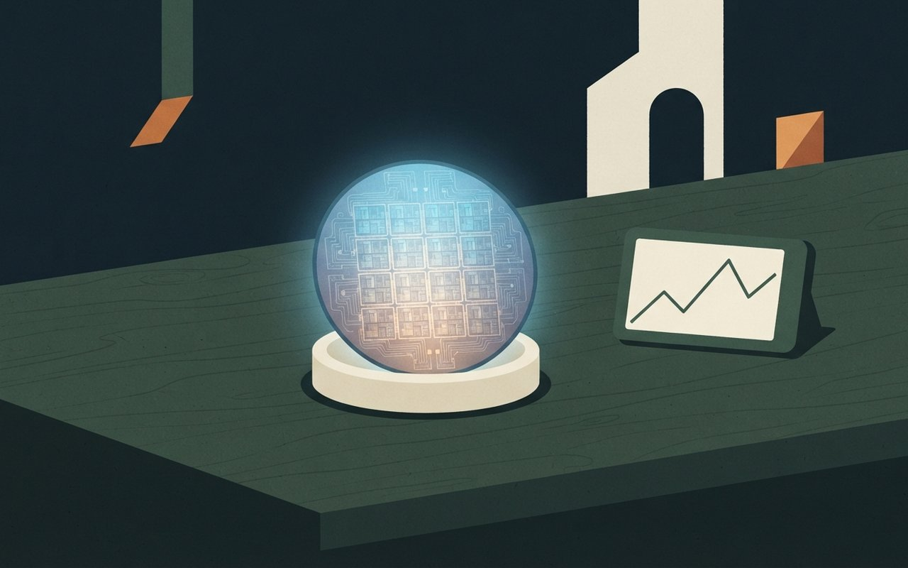

🌡 서울 · 최저 15° 최고 21° · 비 소식 없음 · 남부·제주는 오전까지 비바람
⚠ 변동 가능 · 뉴시스 10/25 17:45
지난주 코스피는 2.08% 내린 5,550.30으로 마쳤고, 이번 주에는 SK하이닉스(28일)와 삼성전자(29일)가 실적을 발표합니다. 더불어민주당은 조희대 대법원장 국정조사 추진을 공식화했고, 서울 잠수교는 26일 0시부터 차량 통행이 중단돼 한강 첫 보행 전용교 조성 공사에 들어갔습니다. 트럼프 대통령은 이란을 두고 "끝장을 낼 것인가, 합의할 것인가"라고 말했고, 머스크는 우크라이나의 스타링크 속도 제한이 스페이스X의 조치였다고 밝혔습니다. HD현대는 미국에 조선소를 짓는 협약을 맺었습니다.
🎧 듣기 · 약 3분
릴스 원고 · 카드 1
삼성전자가 석 달 동안 번 영업이익이 107.4조 원입니다. 국내 기업의 분기 영업이익이 100조 원을 넘은 건 처음입니다.
이번 주에는 SK하이닉스가 28일, 삼성전자가 29일 실적을 발표합니다. 하이닉스는 시장 예상치로 매출 98조 원, 영업이익 77조 원이 나와 있는데, 공식 실적이 아니라 컨센서스입니다.
그런데 지난주 코스피는 2.08% 내려 5,550.30으로 마쳤습니다. 외국인은 7,198억 원, 개인은 1조 1,021억 원을 순매도했습니다.
파이낸셜뉴스는 이 하락이 실적 우려보다 매도 물량을 받아 줄 수요가 약해진 탓이라고 분석했습니다. 두 회사의 자사주 매입이 끝나 수급이 약해졌다는 점도 짚었습니다.
기사 표기로 29일에는 미국 FOMC 일정이 있고 금리 동결이 예상됩니다. 종목 추천이나 전망이 아니라 이번 주 일정입니다.
🎧 낭독 원고 보기
10월 26일 월요일, 데일리 브리프입니다. 오늘은 여섯 가지 소식을 전해 드립니다.
지난주 코스피가 5,550선으로 한 주 동안 2.08% 내렸습니다. 투자자별로는 외국인이 7,198억 원, 개인이 1조 1,021억 원을 순매도했고, 기관과 기타법인이 순매수했습니다. 이번 주에는 SK하이닉스가 28일, 삼성전자가 29일 실적을 발표하고, 29일에는 미국 FOMC 일정도 있습니다. 파이낸셜뉴스는 최근 하락이 실적 우려보다 매도 물량을 받아 줄 수요가 약해진 탓이라고 분석했습니다. 삼성전자는 앞서 3분기 잠정 영업이익 107.4조 원을 발표했는데, 국내 기업의 분기 영업이익이 100조 원을 넘은 것은 처음입니다.
더불어민주당이 조희대 대법원장 국정조사 추진을 공식화했습니다. 국정조사는 재적의원 4분의 1의 요구로 시작할 수 있습니다. 조 대법원장의 임기는 내년 6월까지입니다. 오늘 법사위 종합감사에서 이를 둘러싼 공방이 예상되고, 국민의힘은 탄핵의 빌드업이라며 비판하고 있습니다.
서울 잠수교가 오늘 0시부터 차량 통행을 멈추고, 한강 첫 보행 전용교 조성 공사에 들어갔습니다. 보행자와 자전거는 계속 이용할 수 있습니다. 버스 740번과 405번은 반포대교로 돌아가고, 정류장 2곳이 폐쇄됩니다. 완공 목표는 2027년 8월이고, 선박 항로 위에 투명 바닥 2곳과 전망 공간 22곳이 새로 생깁니다. 이 소식은 한국일보 단일 보도입니다.
트럼프 대통령이 이란을 두고 끝장을 낼 것인지, 합의를 할 것인지 결정해야 한다고 말했습니다. 이란 외무부 대변인은 중재국을 통해 메시지를 주고받고 있고 외교의 문을 닫지 않았다고 밝혔으며, 미국 국무부는 중동 13개국에 여행 경보를 냈습니다. 제3 항모전단이 페르시아만으로 이동했고, 군사 옵션은 보고됐지만 최종 승인은 나지 않았다고 전해졌습니다.
머스크가 우크라이나군이 약관을 위반해 공격용 드론에 스타링크를 썼고, 그 허점을 지난주 막았다고 밝혔습니다. 우크라이나 쪽은 약관 위반이 아니라고 반박했습니다. 경향신문에 따르면 속도 하락과 드론 추락은 조종사들의 목격담으로 전해졌습니다.
HD현대가 미국 키윗과 미국 조선소를 세우는 협약을 맺었습니다. 일자리는 약 3,000개이고, 착공은 내년, 본격 가동은 2029년이 목표입니다. 투자 규모와 부지는 아직 정해지지 않았고, 미국 남부와 서부 후보지를 살펴보고 있다고 합니다.
끝으로 오늘 서울 날씨입니다. 아침 최저 15도, 낮 최고 21도로 예보됐고, 서울은 비 소식이 없습니다. 남부와 제주는 오전까지 태풍의 영향으로 비바람이 이어지겠습니다. 날씨는 바뀔 수 있습니다.
이상 데일리 브리프였습니다. 자세한 출처는 카드에서 확인하실 수 있습니다. 한 주도 힘차게 시작하세요.
Economy — 증시·반도체
週
증시 · 반도체 실적
코스피 지난주 2.08% 하락, 5,550.30 — 이번 주 SK하이닉스 28일·삼성전자 29일 실적 발표
지난주(10/19~23) 코스피는 5,668.05에서 5,550.30으로 117.75p(2.08%) 내렸다. 투자자별로는 기관이 4,190억 원, 기타법인이 1조 4,024억 원을 순매수했고 개인은 1조 1,021억 원, 외국인은 7,198억 원을 순매도했다(파이낸셜뉴스). 이번 주 실적 발표는 SK하이닉스 28일, 삼성전자 29일이고, 마이크로소프트·알파벳은 29일(한국시간), 아마존·인텔·샌디스크는 30일(한국시간)이다. FOMC는 기사 표기로 29일이며 금리 동결이 예상된다(일정은 바뀔 수 있다).
삼성전자는 10월 8일 3분기 잠정 실적으로 매출 195조 원, 영업이익 107.4조 원을 발표했다. 국내 기업 분기 영업이익이 100조 원을 넘긴 것은 처음이다(뉴시스). SK하이닉스는 FnGuide 컨센서스 기준 매출 98조 원, 영업이익 77조 원이 예상된다. 컨센서스는 시장 예상치이고 공식 실적이 아니다.
순매수·순매도기관 +4,190억 · 기타법인 +1조 4,024억 · 개인 -1조 1,021억 · 외국인 -7,198억
삼성전자 3Q 잠정매출 195조 원 · 영업이익 107.4조 원 (10/8 발표, 국내 기업 분기 영업이익 첫 100조 원 돌파)
SK하이닉스 3Q컨센서스(FnGuide) 매출 98조 원 · 영업이익 77조 원 · 실적 발표 10/28 ⚠ 변동 가능
Marketing View · 마케터의 시선
파이낸셜뉴스는 최근 하락이 실적 우려보다 매도 물량을 받아 줄 수요가 약해진 탓이라고 분석했고, 두 회사의 자사주 매입이 끝나 수급이 약해졌다고 짚었다. 기사는 최근 하락의 원인을 실적 전망보다 수급 쪽에서 찾았고, 앞으로의 주가를 예측한 것은 아니다.
파이낸셜뉴스 — 주간 증시·실적 일정뉴시스 — 삼성·SK하이닉스 3분기 실적파이낸셜뉴스(10/25 19:09)·뉴시스(10/26 05:00) · 코스피 주간 등락·투자자별·일정은 파이낸셜뉴스 본문, 삼성 잠정·하이닉스 컨센서스는 뉴시스 본문 · 매체별로 나뉜 사실이라 교차 확인은 못 함 · 증시 전망·종목 추천 아님 (확인 2026-10-26)
코스피 지난주 2.08% 하락, 이번 주 실적 발표
지난주 코스피가 2.08% 내린 5,550.30으로 마쳤어요. SK하이닉스는 28일, 삼성전자는 29일 실적을 발표해요. 삼성전자 3분기 잠정 영업이익은 107.4조 원이에요.
107.4조|삼성전자 3분기 잠정 영업이익
A glowing silicon wafer on a dark desk next to a small rising and falling line chart, flat illustration, no text

Politics — 국정조사
調
정치 · 국정조사
민주당, 조희대 대법원장 국정조사 추진 공식화 — 26일 법사위 종합감사에서 공방 예상
더불어민주당 지도부가 25일 조희대 대법원장에 대한 국정조사 추진을 공식화했다. 국정조사는 재적의원 4분의 1의 요구로 시작할 수 있어 여당 단독으로도 가능하다. 조 대법원장의 임기는 내년 6월이다. 김민석 대표는 24일 "국정조사를 포함해 원래 생각한 대로 차근차근 진행해 나갈 것"이라고 말했다(경향신문).
뉴시스에 따르면 26일에는 국방위·기후에너지환경노동위·법사위·행안위가 종합감사를 열고, 법사위에서는 조 대법원장 탄핵·국정조사를 둘러싼 공방이 예상된다. 쟁점은 대법관 후보 재추천 불요청과 오세훈 시장 항소심 무죄 판결이다. 국민의힘은 이를 탄핵의 '빌드업'이라며 비판하고 있다.
추진10/25 민주당 지도부 조희대 대법원장 국정조사 추진 공식화
요건재적의원 4분의 1 요구로 개시 가능 · 조 대법원장 임기 내년 6월
국감10/26 법사위 등 4개 상임위 종합감사 · 10/27 외통위·복지위 · 10/29 운영위(대통령실)
입장민주당: 국정조사 추진 · 국민의힘: 탄핵 '빌드업'이라며 비판
Context · 맥락 읽기
국정조사 추진은 발표된 계획이고 실제 개시 여부와 범위는 정해지지 않았다. 양측 입장은 각 당의 주장이며, 이 카드는 어느 쪽 평가도 싣지 않았다. 앞서 10/24 브리프의 오세훈 항소심 무죄 판결이 이번 공방의 쟁점으로 이어졌다.
경향신문 — 국정조사 추진 공식화뉴시스 — 26일 국정감사 일정경향신문(10/25 18:06)·뉴시스(10/26 05:00) · 추진 공식화와 요건·임기는 경향 본문, 국감 일정·쟁점·국민의힘 반응은 뉴시스 본문 · 민주당 발언은 요지만 인용 · 개시 시점은 기사에 없음 (확인 2026-10-26)
민주당, 조희대 국정조사 추진, 법사위 공방 예상
민주당이 25일 조희대 대법원장 국정조사 추진을 공식화했어요. 재적의원 4분의 1이 요구하면 시작할 수 있어요. 26일 법사위 종합감사에서 공방이 예상돼요.
재적 4분의 1|국정조사 요구 요건
Life — 서울
橋
생활 · 잠수교
서울 잠수교 26일 0시부터 차량 통행 중단 — 한강 첫 보행 전용교 조성 공사, 버스 2개 노선 우회
서울 잠수교가 26일 0시부터 차량 통행을 멈추고 한강의 첫 보행 전용교를 만드는 공사에 들어갔다. 보행자와 자전거는 계속 이용할 수 있다. 버스 740번과 405번은 반포대교로 우회하고, '반포한강공원·세빛섬' 정류장 2곳은 폐쇄돼 대체 정류장인 '반포대교남단·한강시민공원입구'를 이용해야 한다(한국일보).
완공 목표는 2027년 8월이다. 보행 데크를 넓히고, 선박 항로 위에 투명 바닥 2곳과 전망 공간 22곳을 새로 만든다. 잠수교는 길이 795m로 용산과 서초를 잇는 다리이고 1976년 한강의 9번째 다리로 개통했다. 2008년에는 4차로 중 2차로를 보행·자전거용으로 바꿨다.
다리길이 795m · 용산–서초 · 1976년 개통 · 2008년 4차로 중 2차로 보행·자전거용
Marketing View · 마케터의 시선
출퇴근에 740번·405번을 타던 사람에게는 정류장이 바뀌는 것이 가장 직접적인 변화다. 다리가 도로에서 '걷는 장소'로 바뀌면서 한강 산책 코스가 새로 생기는 셈이고, 공사 중 이용 범위와 일정은 기사에 자세히 나와 있지 않다.
한국일보 — 잠수교 보행 전용교한국일보(10/25 10:24) 단일 출처 · 교차 확인 못 함 · 공사 중 보행 가능 범위는 기사에 없음 · 완공 목표는 변동 가능 (확인 2026-10-26)
잠수교 차량 통행 중단, 보행 전용교 공사 시작
26일 0시부터 잠수교 차량 통행이 멈췄어요. 한강 첫 보행 전용교 공사가 시작돼 버스 740·405번은 반포대교로 돌아가요. 완공 목표는 2027년 8월이에요.
795미터|잠수교 길이
서울 서초
740·405번 버스 / 반포대교로 우회
A calm pedestrian-only bridge over a wide river with walkers and cyclists and no cars, soft autumn light, generic illustration not a specific real bridge, no text
World — 미국·이란
決
국제 · 미국·이란
트럼프 "끝장을 낼 것인가, 합의를 할 것인가" — 미 국무부, 중동 13개국에 여행 경보
트럼프 대통령은 25일(현지) 폭스뉴스 인터뷰에서 이란을 두고 "결정을 내려야 한다. 끝장을 낼 것인가, 아니면 합의를 할 것인가"라고 말했다. 제3 항모전단을 페르시아만으로 이동시켰고, 미 중부사령부가 타격 옵션 여러 개를 헤그세스 국방장관에게 보고했지만 최종 승인은 나지 않았다고 더힐을 인용해 전해졌다(뉴시스).
이란 외무부 대변인 바가이는 외교의 문을 닫지 않았고 중재국을 통해 메시지를 주고받고 있다고 밝혔다. 경향신문은 워싱턴포스트를 인용해 클레이턴 국가정보국장이 루비오 국무장관에게 이란의 미국인 암살 음모가 '진전된 단계'라는 서한을 보냈다고 전했고, 뉴욕타임스는 이란의 위협을 2월 전쟁 발발 이후 최고 수준으로 평가했다고 보도했다. 국무부는 중동 13개국에 주황색(여행 재고) 또는 적색(여행 금지) 경보를 냈다.
발언10/25(현지) 폭스뉴스 인터뷰 · "끝장을 낼 것인가, 합의를 할 것인가"
군사제3 항모전단 페르시아만 이동 · 중부사령부 타격 옵션 여러 개 보고(더힐 인용), 최종 승인 없음
이란외무부 대변인 "외교의 문 안 닫았다", 중재국 통해 메시지 교환
경보국무부 중동 13개국 주황(여행 재고)·적색(여행 금지) · 뉴시스: 트럼프, 11월 중간선거 이후 공격 재개 시사
Context · 맥락 읽기
이 카드의 군사 옵션·암살 음모 내용은 미국 언론과 정부 관계자를 통한 보도이고, 이란 측은 공식 입장으로 외교 여지를 밝혔다. 합의와 공격 어느 쪽으로도 정해진 것은 없다. 10/24 브리프의 국제 유가·이란 발언 이후의 새 전개를 다뤘다.
뉴시스 — 트럼프 폭스뉴스 인터뷰경향신문 — 이란 암살 음모·여행 경보뉴시스(10/26 03:08)·경향신문(10/25 15:37) · 트럼프 발언·항모·이란 반응은 뉴시스 본문, 암살 음모 서한·NYT 평가·13개국 경보는 경향 본문(WP·NYT 인용) · 모두 해외 언론·익명 관계자 보도를 옮긴 것 · 트럼프 인터뷰는 블룸버그 인용 재전(뉴시스) (확인 2026-10-26)
트럼프 "끝장이냐 합의냐" 이란에 결정 촉구
트럼프가 이란에 끝장낼지 합의할지 결정해야 한다고 했어요. 이란은 외교의 문을 닫지 않았다고 밝혔고, 미국은 중동 13개국에 경보를 냈어요.
Tech — 스타링크
衛
IT · 스타링크
머스크 "스타링크 허점을 지난주 막았다" — 우크라이나 "약관 위반 아니다" 반박
일론 머스크는 24일(현지) X에 올린 글에서 우크라이나군이 약관을 위반해 공격용 드론에 스타링크를 썼고, 그 허점을 '지난주' 막았다고 밝혔다. 군용망 '스타실드'는 미국 정부가 통제한다고도 썼다. 약 10일 전 우크라이나 드론 조종사들이 속도가 시속 40마일(약 64km) 아래로 떨어지는 것을 봤고 일부 드론은 연결이 끊겨 추락했다고 전해졌다(경향신문).
젤렌스키 대통령은 속도가 제한 전 수준으로 복구됐다고 말했다. 트럼프 대통령은 자신이 결정하지 않았다고 했고 루비오 국무장관과 헤그세스 국방장관은 정부 관여를 부인했다. 밴스 부통령은 백악관과 머스크가 조율했을 가능성을 시사했다. 우크라이나 전 국방부 고문은 우크라이나가 약관을 위반하지 않았다고 반박했다.
머스크 주장10/24(현지) X 글 · 우크라이나군 약관 위반으로 공격용 드론에 스타링크 사용 · 허점을 지난주 차단
현장약 10일 전 속도 시속 40마일(약 64km) 아래로 하락, 일부 드론 추락 — 조종사 목격담으로 전해짐
미국 정부트럼프 "내가 결정하지 않았다" · 루비오·헤그세스 관여 부인 · 밴스 백악관-머스크 조율 가능성 시사
우크라이나젤렌스키 "속도 복구" · 전 국방부 고문 "약관 위반 아니다"
Context · 맥락 읽기
속도 하락과 드론 추락은 현장 조종사의 증언으로 전해진 것이고, 약관 위반 여부는 머스크와 우크라이나 측 주장이 엇갈린다. 민간 기업이 전쟁 중인 나라의 통신을 사실상 쥐고 있다는 점이 이번 논쟁의 배경이다.
경향신문 — 머스크 스타링크 속도 제한경향신문(10/25 17:00) 단일 출처 · 교차 확인 못 함 · 머스크 글·조종사 목격담·각국 반응 모두 기사 속 귀속 · 속도 수치는 간접 전언 (확인 2026-10-26)
머스크 "스타링크 허점 지난주 막았다"
머스크가 우크라이나군이 약관을 어겨 드론에 스타링크를 썼고 허점을 지난주 막았다고 밝혔어요. 우크라이나 쪽은 약관 위반이 아니라고 반박했어요.
시속 40마일 아래|조종사 목격담으로 전해진 속도
머스크 약관 위반 주장 / 우크라이나 반박
Industry — 조선
船
산업 · 미국 조선소
HD현대, 미국 조선소 'HD키윗조선' 설립 협약 — 일자리 약 3,000개, 2029년 본격 가동
HD현대가 미국 건설·엔지니어링 기업 키윗과 22일(현지) 'HD키윗조선' 설립 협약을 맺었다. 일자리는 약 3,000개이고, 착공은 내년, 본격 가동은 2029년이 목표다. 투자 규모와 부지는 정해지지 않았고 미국 남부와 서부 후보지를 검토 중이다(경향신문).
이번 협약은 한국의 대미 조선 협력 사업 '마스가'(총 1,500억 달러)의 연장선에서 나왔다. 한화는 2024년 필리조선소를 인수했고 지난해 50억 달러 추가 투자 계획을 발표했다.
협약HD현대–키윗 · 10/22(현지) · 'HD키윗조선' 설립
일정착공 내년 · 본격 가동 2029년 목표
규모일자리 약 3,000개 · 투자액·부지 미정(남부·서부 후보지 검토)
배경마스가 총 1,500억 달러 · 한화 필리조선소 2024년 인수, 50억 달러 추가 투자 계획
Marketing View · 마케터의 시선
일자리와 가동 연도는 나왔지만 투자 규모와 부지는 아직 비어 있다. 지금은 협약 단계라 착공 일정이나 규모가 바뀔 수 있고, 같은 기사에 실린 전문가 해석은 이 카드에 옮기지 않았다.
경향신문 — HD키윗조선 설립 협약경향신문(10/25 17:02) 단일 출처 · 교차 확인 못 함 · 투자액·부지는 기사에 없음 · 일정은 계획이라 ⚠ 변동 가능 (확인 2026-10-26)
HD현대 미국 조선소 일자리 3,000개 목표
HD현대가 미국 키윗과 'HD키윗조선' 설립 협약을 맺었어요. 일자리는 약 3,000개, 본격 가동은 2029년이 목표예요. 투자 규모와 부지는 미정이에요.
2029년|본격 가동 목표
착공 내년 / 일자리 약 3,000개
A large shipyard with tall cranes and a half-built ship hull at sunrise, flat illustration, generic, no text, no logos